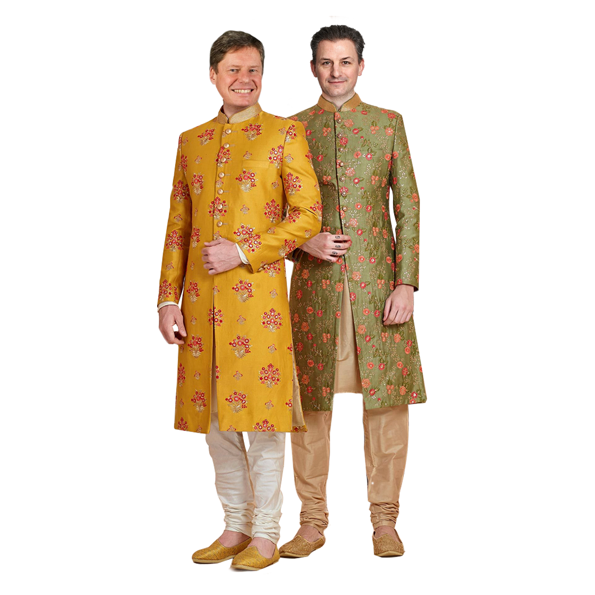
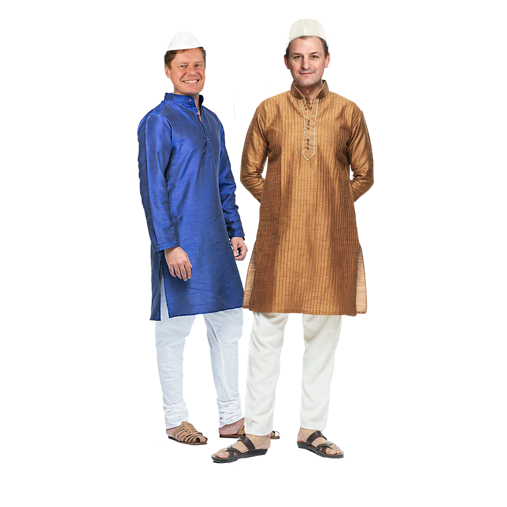
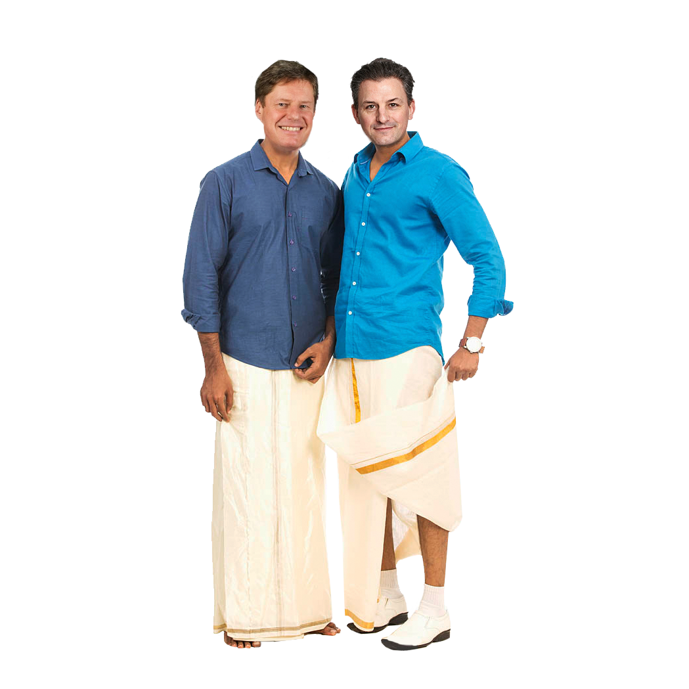
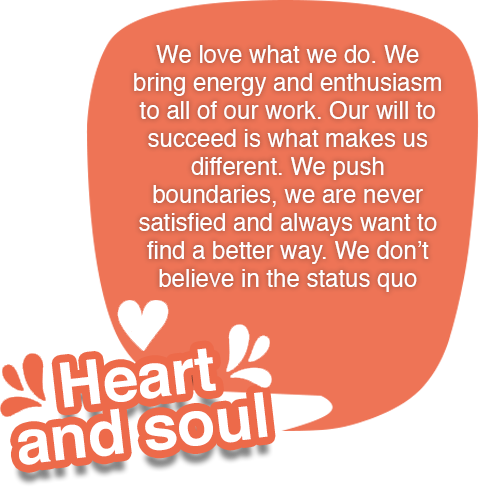

<script src="https://aframe.io/releases/0.8.2/aframe.min.js"></script>
<script src="hogarth-ar.js"></script>
<script src="https://cdn.rawgit.com/donmccurdy/aframe-extras/v4.1.2/dist/aframe-extras.min.js"></script>
<script src="https://rawgit.com/mayognaise/aframe-gif-shader/master/dist/aframe-gif-shader.min.js"></script>
<script src="https://ajax.googleapis.com/ajax/libs/jquery/3.3.1/jquery.min.js"></script>
<script src="https://maxcdn.bootstrapcdn.com/bootstrap/3.3.7/js/bootstrap.min.js"></script>
<script>
    AFRAME.registerComponent('vidhandler', { // ... 
        init: function () {
            // Set up initial state and variables. 
            this.toggle = false;
            this.vid = document.querySelector("#vid");
            this.vid.pause();
        },
        tick: function () {
            if (this.el.object3D.visible == true) {
                if (!this.toggle) {
                    this.toggle = true;
                    this.vid.play();
                }
            } else {
                this.toggle = false; this.vid.pause();
            }
        }
    });
    function refrespage() {
        location.reload();
    }
</script>

<a-scene embedded artoolkit='sourceType: webcam; detectionMode: mono; trackingMethod: best; debugUIEnabled: false; maxDetectionRate: 30; canvasWidth: 250; canvasHeight: 250'
    vr-mode-ui="enabled: false">
    <a-assets>
        <!-- Audio -->
        <audio id="horse" src="horse.mp3" preload="auto" autoplay></audio>

        <!--Video-->
        <video preload="auto" id="vid" autoplay loop="true" crossorigin webkit-playsinline playsinline controls>
            <source type="video/webm" src="airplane.webm">
            <h3>Error : Your browser does not support.</h3> -->
            <!-- FOR NOTMAL VIDEO YOU CAN USE MP4 or WEBM BUT FOR ALPHA VIDEO YOU NEED TO USE .WEBM FORMAT-->
        </video>

        <!--images-->
        
        
        

        
        
        
        

    </a-assets>

    <!--India Points Starts-->
    <a-marker crossorigin="anonymous" id="delhi" type="pattern" preset="custom" url="delhi.patt">
        <a-plane position='0 0.1 0' scale="2 2 2" rotation="-90 0 0" material='transparent:true; alphaTest:0; src:#markDelhiImg'></a-plane>
        <a-entity sound="src: #horse"></a-entity>
    </a-marker>

    <a-marker crossorigin="anonymous" id="mumbai" type="pattern" preset="custom" url="mumbai.patt">
        <a-plane position='0 0.1 0' scale="2 2 2" rotation="-90 0 0" material='transparent:true; alphaTest:0; src:#markMumbaiImg'></a-plane>
        <a-entity sound="src: #horse"></a-entity>
    </a-marker>

    <a-marker crossorigin="anonymous" id="chennai" type="pattern" preset="custom" url="chennai.patt">
        <a-plane position='0 0.1 0' scale="2 2 2" rotation="-90 0 0" material='transparent:true; alphaTest:0; src:#markChennaiImg'></a-plane>
        <a-entity sound="src: #horse"></a-entity>
    </a-marker>
    <!--India Points Ends/-->

    <!--Hogarth Values Starts-->
    <a-marker crossorigin="anonymous" id="handsOn" type="pattern" preset="custom" url="handsOn.patt">
        <a-plane position='0 0.1 0' scale="2 2 2" rotation="-90 0 0" material='transparent:true; alphaTest:0; src:#handsOnImg'></a-plane>
    </a-marker>

    <a-marker crossorigin="anonymous" id="happyFamily" type="pattern" preset="custom" url="happyFamily.patt">
        <a-plane position='0 0.1 0' scale="2 2 2" rotation="-90 0 0" material='transparent:true; alphaTest:0; src:#happyFamilyImg'></a-plane>
    </a-marker>

    <a-marker crossorigin="anonymous" id="honest" type="pattern" preset="custom" url="honest.patt">
        <a-plane position='0 0.1 0' scale="2 2 2" rotation="-90 0 0" material='transparent:true; alphaTest:0; src:#honestImg'></a-plane>
    </a-marker>

    <a-marker crossorigin="anonymous" id="heartAndSoul" type="pattern" preset="custom" url="heartAndSoul.patt">
        <a-plane position='0 0.1 0' scale="2 2 2" rotation="-90 0 0" material='transparent:true; alphaTest:0; src:#heartAndSoulImg'></a-plane>
    </a-marker>
    <!--Hogarth Values Ends/-->

    <!--Video-->
    <a-marker crossorigin="anonymous" id="videoMessage" type="pattern" preset="custom" url="video.patt" vidhandler>
        <a-plane position='0 0.1 0' scale="2 2 2" rotation="-90 0 0" material='transparent:true; alphaTest:0; src:#vid'></a-plane>
    </a-marker>

    <a-entity camera></a-entity>
</a-scene>

<div class="footer">
    <div class="row">
        <div class="col-lg-6 col-md-6 col-sm-6 col-xs-6 pull-left">
            <div class="onebleft">
                <button onclick="vid.play()" class="btn btnskips">Play</button>
            </div>
        </div>
        <div class="col-lg-6 col-md-6 col-sm-6 col-xs-6 pull-right">
            <div class="onebright">
                <button onclick="refrespage()" class="btn btnskips">Refresh</button>
            </div>
        </div>
    </div>
</div>

<style>
    .footer {
        position: fixed;
        left: 0;
        bottom: 0;
        width: 100%;
        color: white;
    }

    .onebleft {
        padding: 5px 5px 5px 5px;
        margin: 5px 15px 5px 5px;
        float: left;
        z-index: 900000000000;
    }

    .onebright {
        padding: 5px 5px 5px 5px;
        margin: 5px 15px 5px 5px;
        float: right;
        z-index: 900000000000;
    }

    .imgon {
        width: 55px;
        height: 55px;
        background-color: white;
        padding: 3px 2px 2px 2px !important;
    }

    .imgss {
        width: 50px !important;
        height: 50px !important;
    }

    .imgname {
        font-size: 10px;
    }

    .header {
        position: fixed;
        left: 0;
        top: 0;
        width: 100%;
        color: white;
    }

    .oneleft {
        padding: 5px 5px 5px 5px;
        margin: 5px 15px 5px 5px;
        float: left;
        z-index: 900000000000;
    }

    body {
        margin: 0px;
        overflow: hidden;
    }

    .resets {
        background-color: rgba(51, 51, 51, 0.529);
        color: #fff;
        text-align: center;
        border-radius: 2px;
        height: 50px;
        padding: 10px 10px 10px 10px;
        position: fixed;
        top: 10px;
        text-align: center;
        z-index: 9000000000;
        bottom: 10px;
    }

    .btnskips {
        background: rgba(0, 0, 0, 0.433);
        color: white !important;
    }

    .btnskips:hover {
        background: rgb(197, 197, 197);
    }

    #arjsDebugUIContainer {
        display: none;
    }

    .a-enter-vr-button {
        display: none !important;
    }
</style>